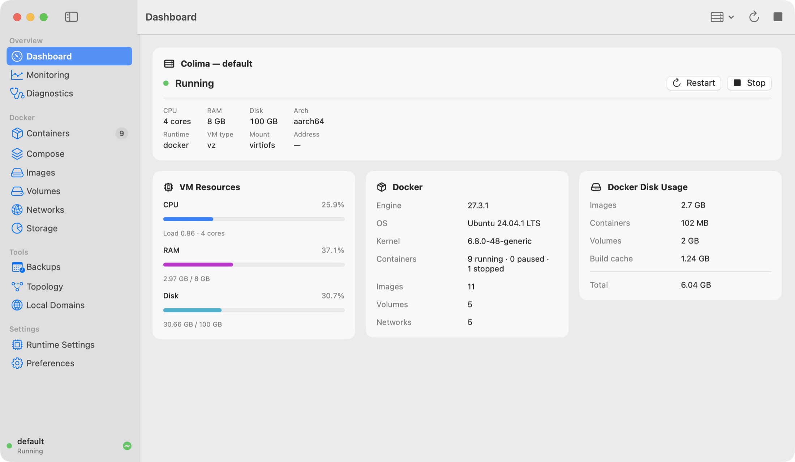
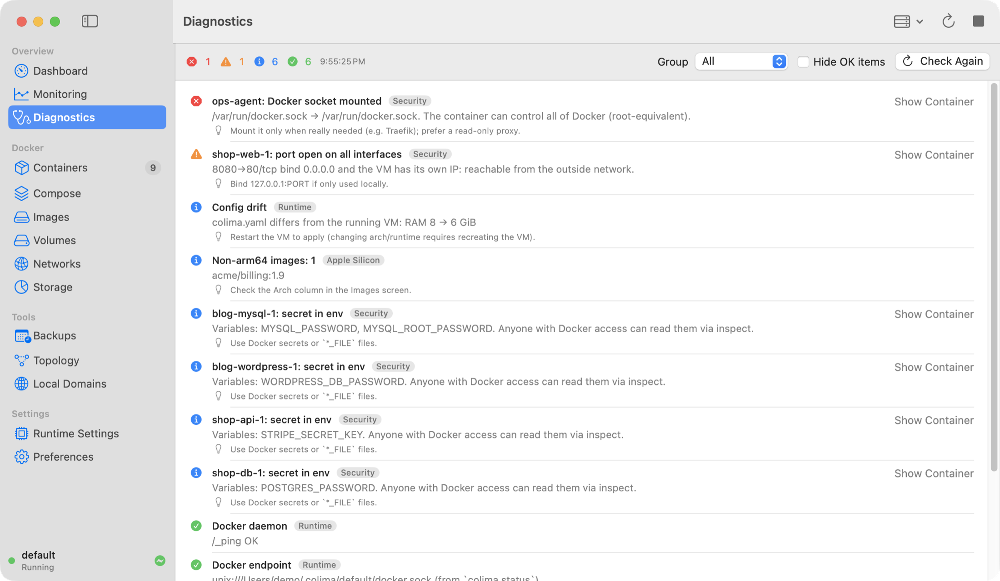

Install
Install or update the latest pre-release with one command. It downloads the build from GitHub Releases, checks its SHA-256 (and its build provenance when the GitHub CLI is signed in) and copies ColimaX into Applications; no sudo. Read the script first if you like.
curl -fsSL https://raw.githubusercontent.com/trongcong/colimax/main/scripts/install.sh | shBuilds are not notarized by Apple yet (an indie project without a paid Developer ID). If you download the DMG yourself, open the app once, then choose System Settings → Privacy & Security → Open Anyway. Prefer to build it yourself? It takes a few minutes:
-
Install Colima and Docker
If you skip this, the Setup Assistant in ColimaX lists what is missing and runs the command for you after you confirm.
brew install colima docker docker-compose -
Build the app
Needs the Swift 6 toolchain that comes with Xcode.
git clone https://github.com/trongcong/colimax.git cd colimax scripts/build-app.sh -
Open it
Copy it to Applications so notifications and open at login work.
cp -R build/ColimaX.app /Applications/ open /Applications/ColimaX.app
Requirements
- macOS
- 14 Sonoma or later
- Mac
- Apple Silicon (M1 or later)
- Colima
- Required, with the docker runtime
- docker CLI
- Only for the Compose screen and opening a shell in Terminal
- Trivy or Docker Scout
- Optional, for image vulnerability scans
Every screen you need, in one sidebar.
Grouped the way the app groups them. Docker screens talk to the Docker Engine API over the Colima socket, so they stay fast and need no extra tools.
Careful with your data.
A container tool can delete a database with one click. ColimaX is built so that it does not.
- Destructive actions ask firstRemoving, pruning and stopping the VM need confirmation. Restoring a database or shrinking a disk asks you to type the name.
- Backups you can trustVolumes are saved as
.tarwith a SHA-256 manifest, and every backup is verified before it is restored. MySQL, MariaDB, PostgreSQL and Redis dumps run inside the container, so credentials never leave it. - Secrets stay hiddenPasswords and tokens in environment variables are masked until you choose to show them.
- A read-only security auditFlags privileged containers, a mounted
docker.sock, host networking and ports open to every interface, without changing anything.
Native, and nothing else to install.
- SwiftUI, no dependenciesWritten in Swift 6 with strict concurrency. No Electron, no bundled runtime, no third-party packages.
- Made for Apple SiliconKnows about Colima profiles, VZ, virtiofs and Rosetta, and warns when an image will run under emulation.
- Always up to dateFollows Docker events and the Colima directory, so the window changes as soon as something does.
- English and VietnameseFollows your system language, or pick one in Preferences.